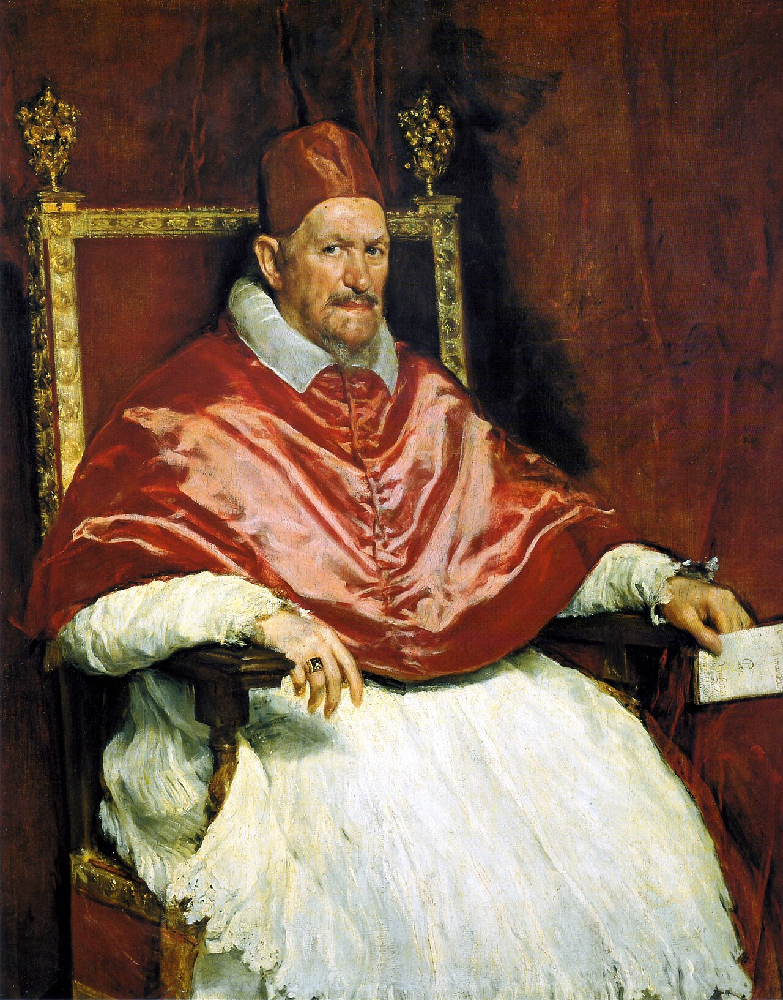
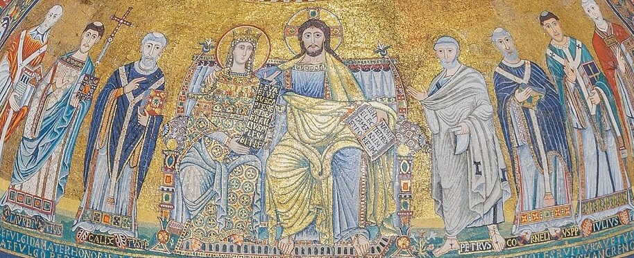
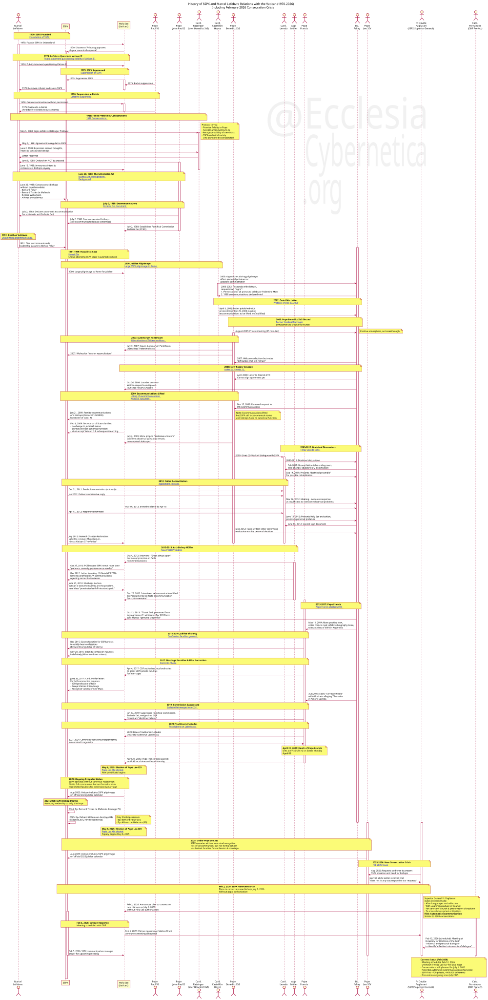
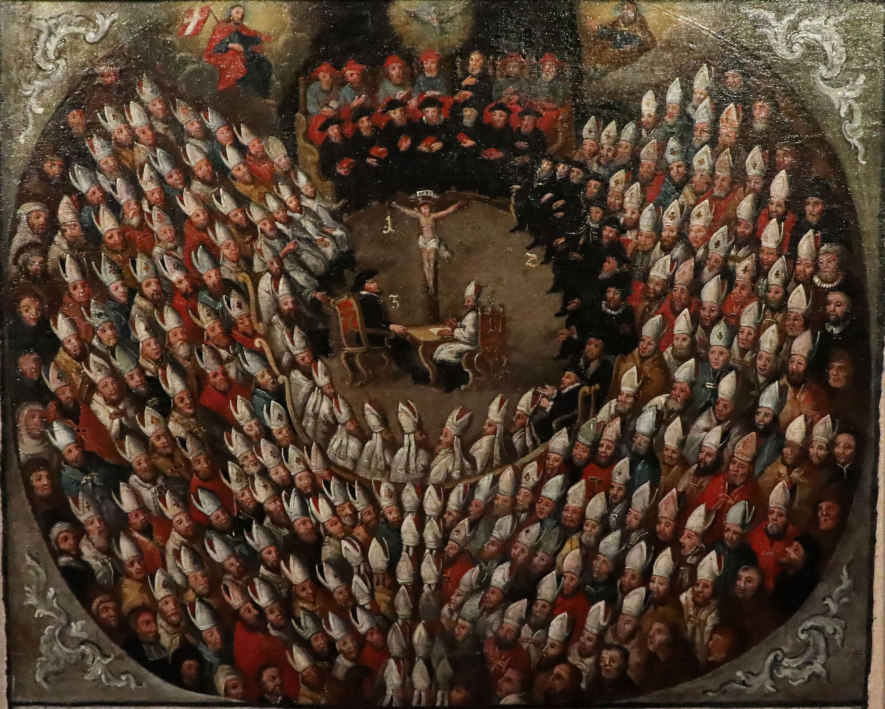

Data-Informed Approaches to Ecclesial Leadership
Read 🇵🇱

Corporate governance is not the same as management. An introduction to what governance is, whether it works, and what it has to do with the Catholic Church.

Lumen Gentium forms the basis for understanding the Church in the post-Second Vatican Council era. This post aims to help you quickly familiarise yourself with its content, as a reference.

Complete timeline of SSPX-Vatican relations from 1970-2026. Understand the Society of Saint Pius X dispute, the 1988 schism, 2009 reconciliation attempts, and the February 2026 crisis over new bishop consecrations.

Analyzing how Pope Francis moved the Catholic Church from lecture hall rows to round tables at the 2023-2024 Synod on Synodality reflects deeper changes in religious leadership, Catholic leadership approaches, and how Catholics participate in the Catholic community—particularly through online presence and use of digital communication.
An excerpt from Livy’s The History of Rome and Aristotle’s Politics on tyrants’ way of controlling the state.